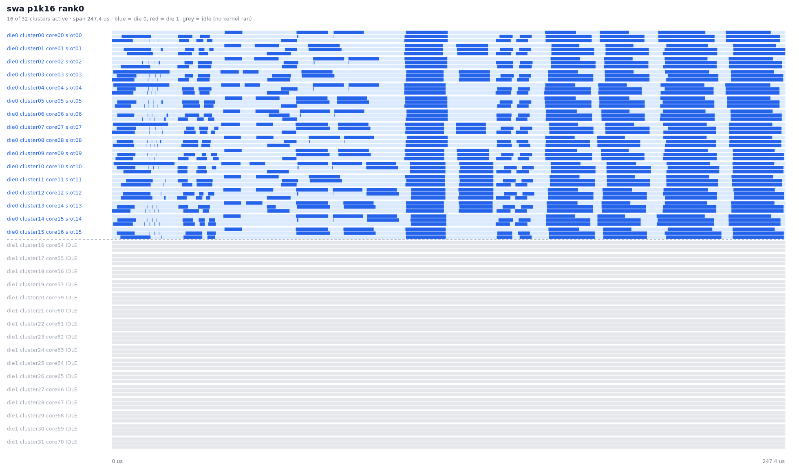

A5 Die 亲和性实测
1. 芯片 AICore 编号
这颗芯片有两块 Die（独立计算区）。每块 Die 有 18 个 AICore，每个 AICore 是一组核：1 个 AIC（矩阵核，做大块矩阵运算）加 2 个 AIV（向量核，做逐个元素的运算）。一块 Die 因此有 18×3 = 54 个小核号。
Die 0：0–53
0–17 18 个 AIC。号本身就是组号 L。
18–53 36 个 AIV。第 L 组的两个 AIV 是 18+2L 和 19+2L。
例：L=0 → AIV 18、19；L=14 → AIV 46、47。
Die 1：54–107
同一套编号整体加 54。
54–71 AIC。72–107 AIV。
判断只做一次除法：物理核号 ÷ 54，商是 0 就在 Die 0，商是 1 就在 Die 1。
物理核号不是程序编的。每个小核启动后自己读硬件寄存器 get_coreid()，软件留下低 12 位。程序只拿这一组里那个 AIC 的号来除，两个 AIV 和它装在同一个 AICore 里，Die 跟它相同。
这次每块 Die 的 18 个 AIC 只启动了 16 个。0 号卡 Die 0 实际启动的是 0–12、14、15、16，空号是 13 和 17，对应空着的 AIV 是 44、45 和 52、53。
泳道图上的 cluster 号是启动序号，不是物理核号。程序按物理号从小到大启动，跳过空号。所以 0 号卡上 cluster 0–12 的物理号正好是 0–12，cluster 13 的物理号是 14，cluster 15 的物理号是 16，cluster 16 起进入 Die 1（物理号 54 起）。
2. 对比实验设计
三次运行拉起的核数相同：始终启动 32 个 cluster（32 个 AIC + 64 个 AIV）。差别只在调度器允许哪些 cluster 取任务。没选中的标记为 IDLE，启动后立刻返回，不取任务。
| 策略 | 怎么放 | K=16 时的实际分布 |
|---|---|---|
| 原方案 | 不挑选，32 个 cluster 都取任务 | Die 0 取 16，Die 1 取 16 |
| 单 Die | K 个全放 Die 0。一块 Die 这次只有 16 个，所以 K 最大 16 | Die 0 取 16，Die 1 一个都不取 |
| 跨 Die | K 必须是偶数，每块 Die 各放 K/2 | Die 0 取 8，Die 1 取 8 |
公平比较的是同一个 K：参与计算的 cluster 数一样，只换它们落在一块 Die 还是两块 Die。
- 指标是 L0 aicore_wall：第一个业务 kernel（跑在核上的一段计算）开始，到最后一个结束。每个配置预热 1 轮、测量 10 轮，表中是 10 轮平均。
- K 取 2、4、8、12、16。跨 Die 另外测到 20、24、28、32，用来看核数增加后的走势，以及满宽时和原方案比。
- 计时运行不开记录。泳道图来自另一轮单独运行，不混进平均值。
- 能做这条对比的是 swa 和 engram。其余用例见第 5 节。
3. 对比结果
单位 µs（微秒，1 毫秒 = 1000 微秒）。「差异」= 跨 Die ÷ 单 Die − 1，负数表示跨 Die 更快。单点波动（标准差 ÷ 平均值）在 0.11%–2.69%。
swa
| K | 单 Die | 跨 Die | 差异 |
|---|---|---|---|
| 2 | 1423.0 | 1427.2 | +0.30% |
| 4 | 730.1 | 726.8 | −0.45% |
| 8 | 395.5 | 395.0 | −0.12% |
| 12 | 300.0 | 298.9 | −0.36% |
| 16 | 245.8 | 240.7 | −2.06% |
| 20 | Die 0 放不下 | 211.8 | — |
| 24 | Die 0 放不下 | 197.1 | — |
| 28 | Die 0 放不下 | 193.7 | — |
| 32 | Die 0 放不下 | 143.1 | — |
engram
| K | 单 Die | 跨 Die | 差异 |
|---|---|---|---|
| 2 | 1010.4 | 1007.6 | −0.27% |
| 4 | 527.2 | 523.7 | −0.68% |
| 8 | 292.0 | 287.4 | −1.58% |
| 12 | 216.0 | 212.4 | −1.67% |
| 16 | 178.6 | 169.6 | −5.07% |
| 20 | Die 0 放不下 | 139.2 | — |
| 24 | Die 0 放不下 | 138.4 | — |
| 28 | Die 0 放不下 | 108.7 | — |
| 32 | Die 0 放不下 | 101.8 | — |
满宽对照：原方案 vs 跨 Die 16+16
六个跑通的用例都能做这一对。核数相同，差别只在调度器是否按 Die 挑选。双卡用例 layers_19_21 取两张卡里较慢的那张。
| 用例 | 原方案 | 跨 Die K=32 | 差异 | 两组波动 |
|---|---|---|---|---|
| engram | 101.7 | 101.8 | +0.10% | 2.69% / 2.38% |
| swa | 141.0 | 143.1 | +1.53% | 1.14% / 2.33% |
| c1a_reuse | 147.9 | 150.1 | +1.52% | 0.92% / 1.30% |
| c2a_full | 190.9 | 192.1 | +0.63% | 1.99% / 1.74% |
| c1a_reindex | 238.3 | 242.6 | +1.79% | 0.75% / 2.41% |
| layers_19_21 | 1875.6 | 1875.6 | +0.00% | 0.57% / 0.87% |
4. 结果分析
跨 Die 更快，而且核越多越明显。engram 从 K=8 起稳定快于单 Die，到 K=16 快 5.07%。swa 在 K≤12 的差距都落在波动里，K=16 快 2.06%，超出本组波动（1.28% 和 0.62%）。
跨 Die 这条路本身几乎不花时间。K=2 时 swa 差 +0.30%、engram 差 −0.27%，都在波动内。如果跨 Die 搬数据有一笔固定开销，核数最少的时候应该最明显，实测没有。
所以变快来自「没挤在一块 Die 上」。同样 K 个 cluster，单 Die 全部共用这一块 Die 的内存通道和片上缓存；跨 Die 拆成两半，两块 Die 各用各的。K 小的时候通道没用满，两边一样快；K 大了单 Die 先满，跨 Die 就拉开。K 从 2 加到 32 是 16 倍核，swa 只快到约 1/10、engram 约 1/10，高核数段已经不是「再加核就线性变快」，和「先撞上通道」一致。
这次没有采缓存未命中或带宽计数。上面是从「K=2 持平、差距随 K 变大」读出来的，不是计数器直接测到的。
调度机制在满宽时没有额外代价。六个用例的「跨 Die 16+16」相对原方案在 +0.00% 到 +1.79%，都没有超过各自波动。
5. 补充说明：哪些用例没做单 Die / 跨 Die 对比
| 用例 | 做到哪一步 | 原因 |
|---|---|---|
| swa、engram | 单 Die 与跨 Die 的全 K 对比 | 任务图里没有「必须同时占满所有核」的栅栏 |
| c1a_reuse、c1a_reindex、c2a_full、layers_19_21 | 只做了满宽 K=32 | 含 sync-start 栅栏：一个任务的全部分块必须同时在位。录制时按 32 个 cluster 写下了分块数，回放改不了。收到 16 时守卫直接拒绝，否则会死锁 |
| moe | 未测 | 它在运行时现场建图，没有接入 Die 参数。另外这张图在窄于 32 的宽度下会中途停住，换运行时也一样 |
栅栏那四组曾经试过按 8、10、12、14、16、20、24 重新录制整段前向，七个宽度都停在同一个点（90 个终点任务完成 86 个）。其中 10 和 14 的任务图结构和成功的 32 宽完全一样，仍然停住。限制在模型侧，不在 Die 调度。
6. K=16 泳道图（swa）
每行是一个 cluster。一行里三条细条从上到下是 AIC、AIV0、AIV1。蓝色是 Die 0，红色是 Die 1，灰色是 IDLE（调度器没让它取任务）。纵轴的 cluster / core 来自 AICPU 读到的物理核号，色块来自每个 kernel 的起止时间，两边对过，活跃的 cluster 一致。



同目录下 engram 的三张图是同一摆法。可缩放版本是旁边的 .perfetto.json，用 ui.perfetto.dev 打开。那里的 AIC_0、AIV_32 是启动序号：32 个 AIC 占 0–31，AIV 从 32 开始排，所以 cluster 0 的两个向量核是 AIV_32 和 AIV_33。